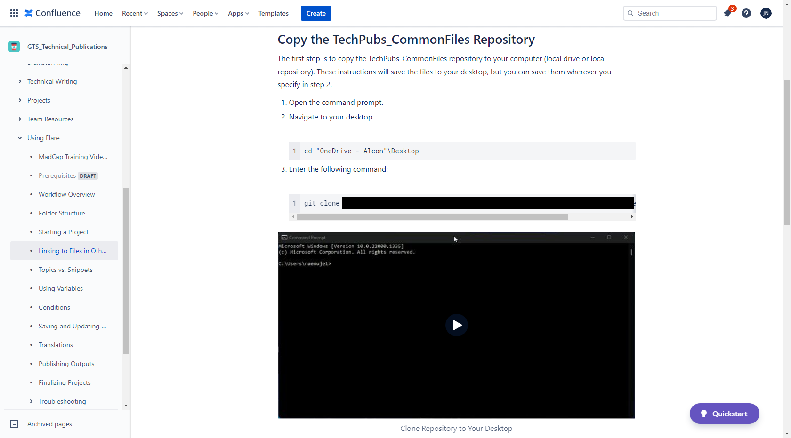

home..
Knowledge Base

Summary
This is an example of an internal knowledge base article written for the technical writing team to clone a remote repository. In general, the knowledge base was only for the technical writing team to share knowledge on R&D projects, writing best practices, and procedures not defined in company SOPs.
Most of the remote technical writing team did not have any experience with MadCap Flare or Git. However, the company was moving use both.
Responsibilities
My responsibilities were to collaborate on the information architecture of entire knowledge base and populate most content. The article in the example used a combination of steps, code samples, and an animated gif demonstrating the steps.
Tools Used
- Atlassian Confluence
- TechSmith Snagit